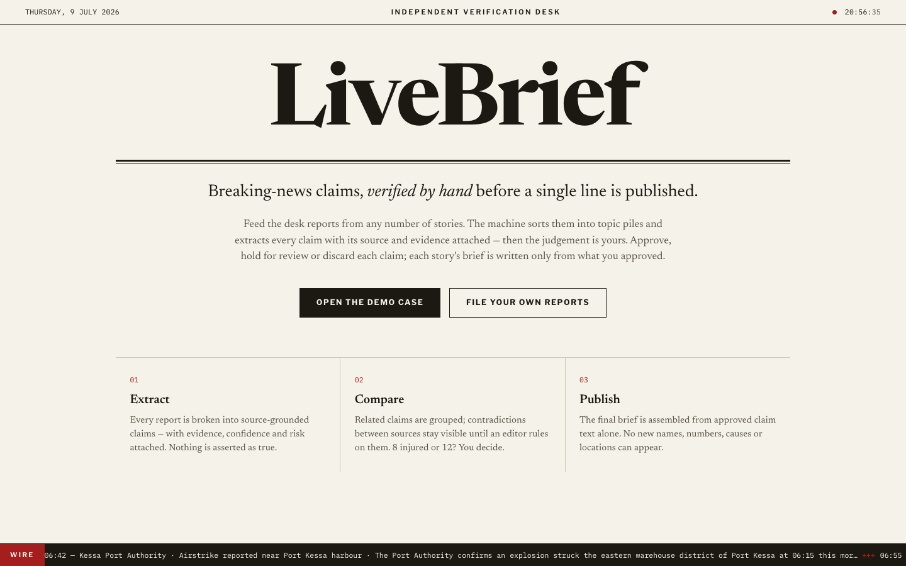
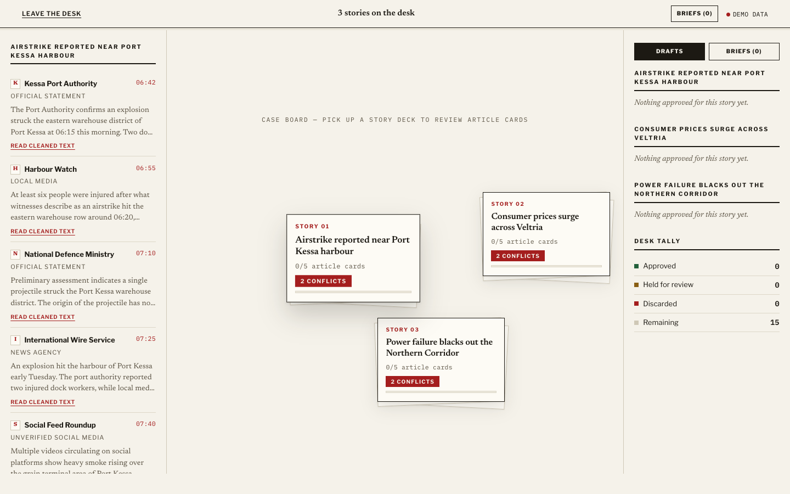
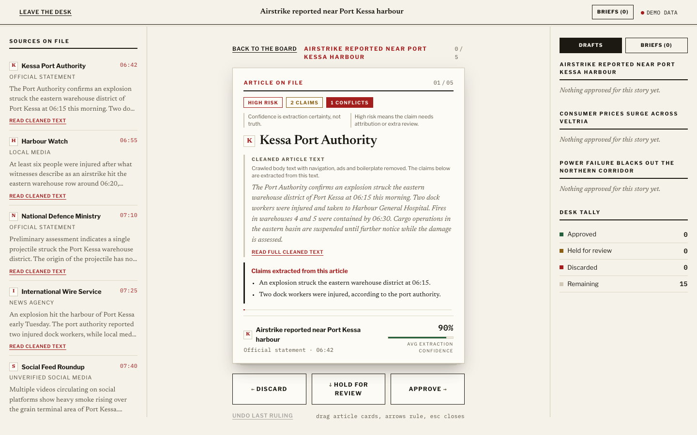
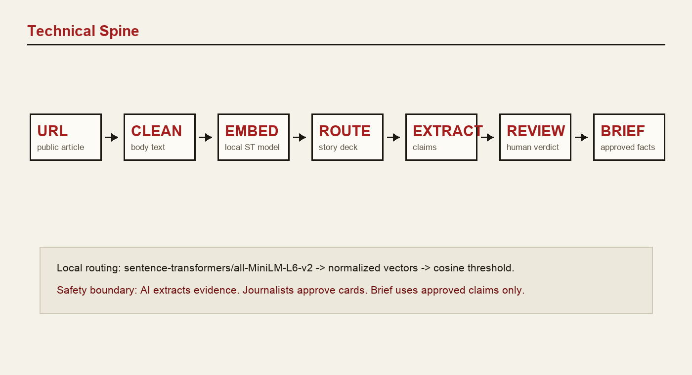

Story decks. Article cards. Human verdicts.

LiveBrief keeps disagreement visible.
Local open-source embeddings group similar articles. No external embedding API.



A sharper verification desk for deadline news.